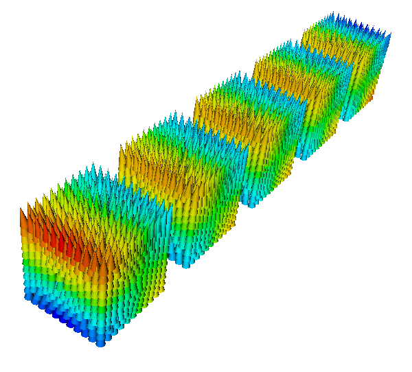
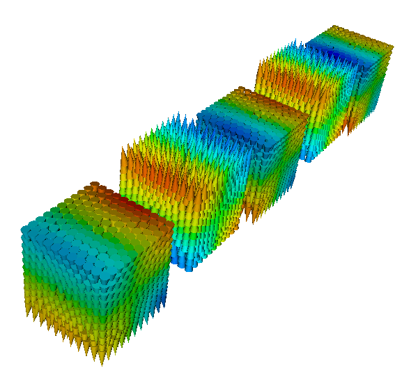

You can simulate an applied field which both changes in space and time: this may be useful to mimic the effect of a write head on the magnetic grains of an hard disk while the head is moving. The way we do this is by changing the applied field every delta_t picoseconds. This means that the applied field won’t change continuously in time: it will be piecewise constant in time (but, in general, it can be non uniform in space). You can do something like:
import math
def set_H(sim):
width = 10.0 # nm
v = 100.0 # nm/ns == m/s
H_amplitude = 0.5e6 # A/m
t = float(sim.time/SI(1e-9, 's')) # get the time in ns
center = (v*t, 0, 0) # center of the applied field region
def H(r):
x, y, z = [ri/1e-9 - ci for ri, ci in zip(r, center)]
factor = H_amplitude*math.exp(-(x*x + y*y + z*z)/(width*width))
return [factor, factor, factor]
sim.set_H_ext(H, unit=SI('A/m'))
sim.relax(do=[(set_H, every('time', SI(50e-12, 's'))),
('exit', at('time', SI(1000e-12, 's')))])
The function set_H is called every 50 ps and does the following: it sets a new field from the function H(r). This function sets a field which directed along the direction [1, 1, 1] and almost vanishes outside a sphere with radius ~ 30.0 nm. The center of this sphere moves along the direction [1, 0, 0] with velocity 100 nm/ns, thus simulating the motion of a write head in a hard disk. Obviously the piece of code is not complete, it shows only the technique in order to have a field changing in time and space. For a complete example see the next section.
Here is a simulation of five cubes made of cobalt and a write-head which moves on the top of the cubes and applies a time-varying field in order to change their magnetisation. At the beginning the magnetisation of all the cubes is pointing in the [0, 0, 1] direction. After the write-head has passed over the cubes, the magnetisation of cube 1, 3 and 5 are switched in the opposite direction, while cube 2 and 4 have unchanged magnetisation. This is possible because the write-head field, which is space-dependent (being intense only inside a sphere of radius 15-20 nm), changes also in time. It indeed translates in space, but also change in intensity, being directed in the [0, 0, -1] direction when the sphere is at the center of cube 1, 3 and 5 and in the [0, 0, 1] direction when the center of the sphere is in cube 2 and 4.
Here is the geo file used to generate the mesh (Netgen):
<pre>
algebraic3d
# cubes
solid cube1 = orthobrick ( 0, 0, 0; 20.0, 20.0, 20.0) -maxh = 2;
solid cube2 = orthobrick ( 30.0, 0, 0; 50.0, 20.0, 20.0) -maxh = 2;
solid cube3 = orthobrick ( 60.0, 0, 0; 80.0, 20.0, 20.0) -maxh = 2;
solid cube4 = orthobrick ( 90.0, 0, 0; 110.0, 20.0, 20.0) -maxh = 2;
solid cube5 = orthobrick (120.0, 0, 0; 140.0, 20.0, 20.0) -maxh = 2;
tlo cube1;
tlo cube2;
tlo cube3;
tlo cube4;
tlo cube5;
And here is the full listing of the example:
from nmag.common import *
import math
# Define magnetic material (data from OOMMF materials file)
mat_Co = MagMaterial(name="Co",
Ms=SI(1400e3, "A/m"),
exchange_coupling=SI(30e-12, "J/m"),
anisotropy=uniaxial_anisotropy(axis=[0, 0, 1],
K1=SI(520e3, "J/m^3")))
sim = Simulation()
sim.load_mesh("cubes.nmesh.h5",
[('cube1', mat_Co), ('cube2', mat_Co), ('cube3', mat_Co),
('cube4', mat_Co), ('cube5', mat_Co)],
unit_length=SI(1e-9, 'm'))
sim.set_m([0, 0, 1])
sim.relax(save=[('fields', at('convergence'))])
t0 = [sim.time]
def set_H(sim):
t = float((sim.time - t0[0])/SI(1e-9, 's')) # get time in ns
width = 10.0 # nm
v = 25.0 # nm/ns = m/s
H_amplitude = 4.0e6*math.sin(math.pi*t) # A/m
center = (v*t, 20, 10)
print "CENTER IN", center
def H(r):
x, y, z = [ri/1e-9 - ci for ri, ci in zip(r, center)]
factor = H_amplitude*math.exp(-(x*x + y*y + z*z)/(width*width))
return [0, 0, -factor]
sim.set_H_ext(H, unit=SI('A/m'))
set_H(sim)
sim.set_params(stopping_dm_dt=0*degrees_per_ns)
sim.relax(save=[('fields', every('time', SI(200e-12, 's'), first=t0[0]))],
do=[(set_H, every('time', SI(50e-12, 's'), first=t0[0])),
('exit', at('time', SI(6000e-12, 's')))])
Here is the magnetisation at the beginning of the simulation, after the first relax command (whose purpose is just to find the zero field magnetisation configuration):
and here is the magnetisation after the write-head has passed over the cubes:
